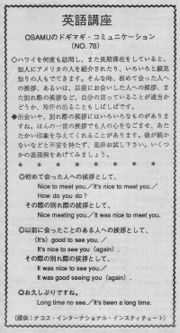

挨拶いろいろ。
If people visit Hawaii many times, they will be introduced to Americans or they might make many friends. At that time, they might not know what they should say to people they meet for the first time or what to say when they leave them.
ハワイを何度も訪問し、また長期滞在をしていると、知人にアメリカの人を紹介されたり、いろいろと顔見知りの人もでてきます。そんな時、初めて会った人への挨拶、あるいは、以前にお会いした人への挨拶、また別れ際の挨拶など、自分の言っていることが適当かどうか、冷汗のでることもしばしばです。
出会いや別れ際の挨拶にはいろいろなものがあります。ほんの一言の挨拶でも人の心をなごませ、あたたかい印象を与えてくれることがあります。後が続かないなどと不安を持たず、是非、お試し下さい。いくつかの表現例をあげてみましょう。
初めて会った人への挨拶として、
Nice to meet you.
It’s nice to meet you.
How do you do?
その際の別れの挨拶として、
Nice meeting you.
It was nice to meet you.
以前に会ったことのある人への挨拶として、
(It’s) good to see you.
It’s nice to see you (again).
その別れ際の挨拶として、
It was nice to see you.
It was good seeing you (again).
お久しぶりですね。
Long time no see.
It’s been a long time.

| © 1995-2013 NACOS International Institute. All Rights Reserved. |